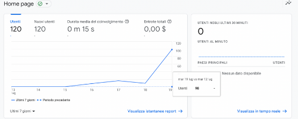
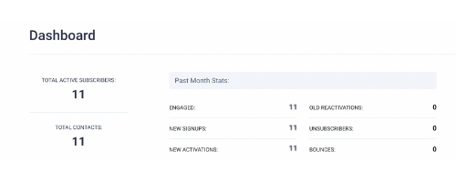

Il sito è studiato per raccontare la pianista Elena Pirisi. Il tutto nasce dall’esigenza di avere un canale diretto ed “istituzionale” con tutte le info biografiche dell’artista. Si rivolge ad appassionati di musica ma anche a organizzatori di eventi e cerimonie. Il sito è interamente progettato da zero con linguaggio html e css.
Lo scopo del sito è creare uno spazio vetrina per raccogliere tutti i traguardi, opere e eventi dell’artista. L'obiettivo è allargare l'audience e permettere ad appassionati e possibili collaboratori di conoscere la pianista
Il target a cui è indirizzato il sito è l’appassionato di musica ma anche l’organizzatore di eventi, concerti o cerimonie che cerca un musicista professionista
Da una attenta analisi dei competitor, si individuano i seguenti:
https://it.riccardogagliardi.net e https://www.giuseppinatorre.it/
I due competitor presentano un'offerta simile. Nel primo caso il sito non è del tutto chiaro, i colori sono spenti e i copy sono difficili da leggere a causa della grandezza dei font e l'assenza di spazi (biografia); il secondo esempio, avendo più esperienza, presenta un sito più ricco rispetto a questo: diverge sotto alcuni aspetti come la rassegna stampa e la discografia.
Fonts: il font che predomina in tutto il sito è “Montserrat”. La scelta
non è casuale, bensì, fra tutti quelli disponibili, questo mi è sembrato il più adatto ai miei obiettivi
comunicativi: non è troppo invadente e, al contempo, è estremamente chiaro e leggibile. Alcune
frasi sono state scritte in bold (sempre con font montserrat) per evidenziarne la loro rilevanza.
Il sito sfrutta la seguente palette, selezionata partendo dai gusti della committente:
#000000
#004aad
#089fad
A caratterizzare il sito, l'aggiunta di un video con annesso audio, l'inserimento di alcune grafiche che rimandano alle note musicali e cornici a contorno delle immagini.
html
css
javascript
- Flaticon
- W3school
- SendFox
- Canva (Wireframe)
- Github (Pubblicazione)
I pro del sito sono la chiarezza e la semplicità con cui gli elementi e la UX sono impostati. Il contenuto è originale. Al contrario, è necessario lavorare sulla responsive da mobile e la UI che risulta, in alcuni tratti, troppo semplice.
Gli obiettivi del progetto sono: cura del personal branding della pianista e allargamento della sua audience.
KPI: +10 seguaci a settimana su Youtube
+50 visite a settimana al sito
+10 iscritti NS a settimana
Il target del sito è per tutti i tipi di utenti, in particolare appassionati di musica classica. Il sito si rivolge, inoltre, ad organizzatori di eventi o cerimonie che potrebbero valutare un'eventuale collaborazione.
Il traffico al sito viene convertito tramite le pagine social personali dell’artista e tramite il referral
L’obiettivo del sito è quello di connettere l’artista con il proprio pubblico e per creare eventuali opportunità lavorative.
L’augurio è che l’utente possa interfacciarsi con l’artista e le sue opere e scoprire la sua arte.
Il sito è promosso attraverso i social personali dell’artista (Instagram) e il referral su Whatsapp. Per raggiungere il target prefissato è stata fondamentale la condivisione attraverso gruppi Whatsapp di conservatori, accademie e scuole di musica.
L'obiettivo del traffico sulla pagina è stato abbondantemente superato:
Come anche il KPI sulla newsletter:
